New Tendenza - FURRY NAILS
New Tendenza in fatto di nail art .. la Furry Nails..Di cosa sto parlando ? di unghia pelose ahahah non sto scherzando ma è tutto vero..Creatore di questa tendenza è Jan Arnold, del brand Creative Nail Design,che si occupa anche delle sfilate di stilisti. Per la maison Libertine,ha creato delle vistosissime unghie pelose, che hanno catturato tutti gli sguardi sulle passerelle di New York e di Londra.
Vi faccio vedere qualche esempio 
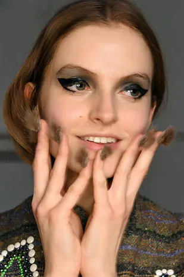
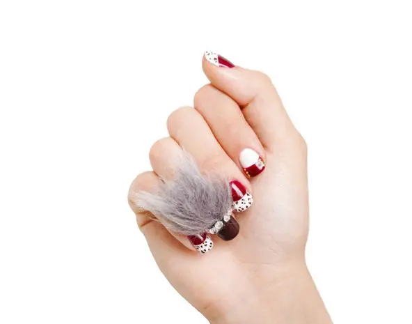
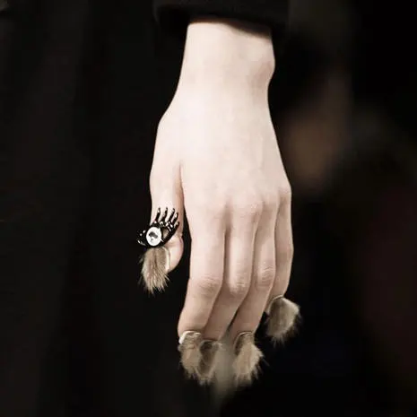
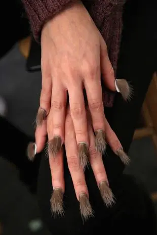
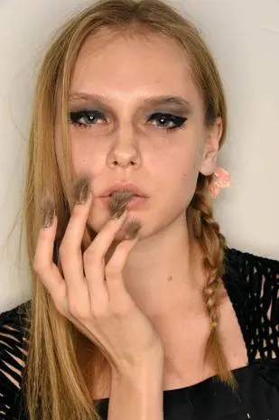
Ottenere la manicure con pelliccia non è poi così complicato: si usa uno smalto bianco o marrone, coperto da uno smalto neutro lucido. Come tocco finale, si applicano i ciuffetti di pelo.Ovviamente la pelliccia è sintetica e non vera, quindi possiamo stare serene sul fatto di animali.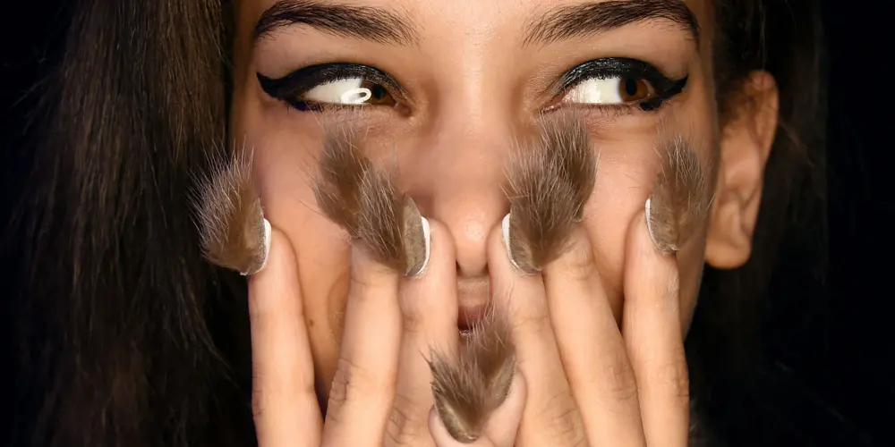
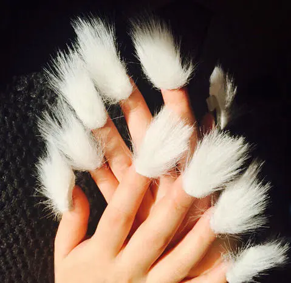
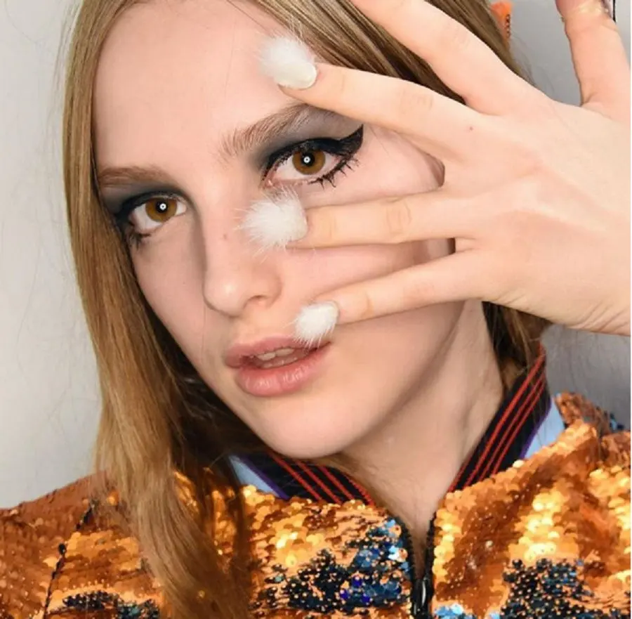
Ma a parte la bellezza, che vabbè è discutibile, ma vogliamo parlare della praticità?
Cioè ci pensate quando si bagnano? e quando c'è da cucinare?non credo che siano poi tanto comode da portare su..
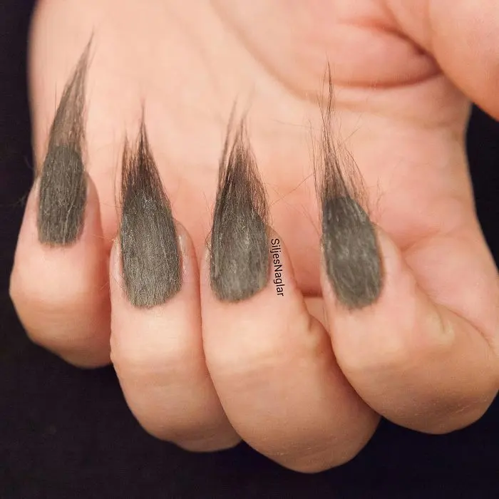
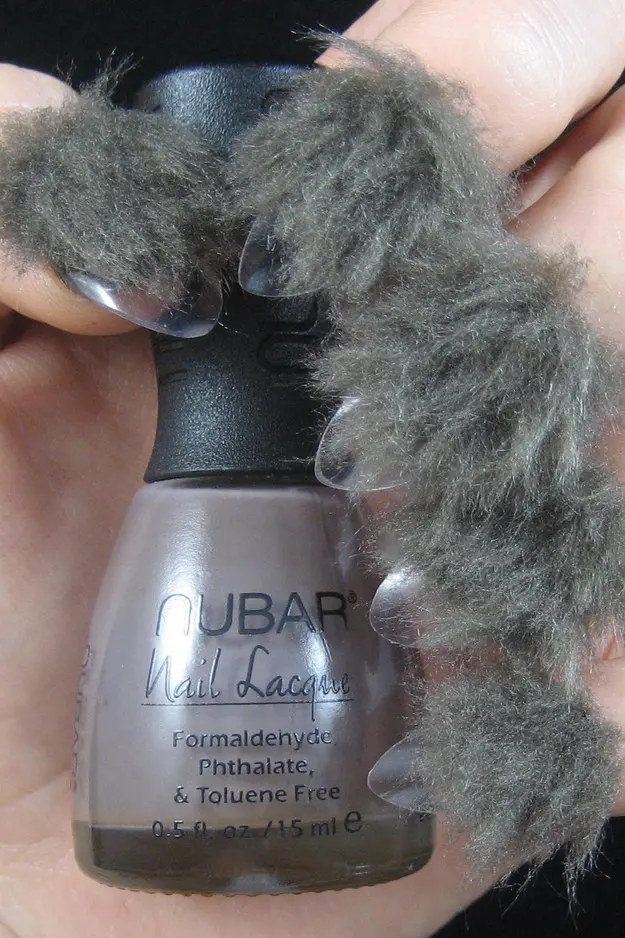
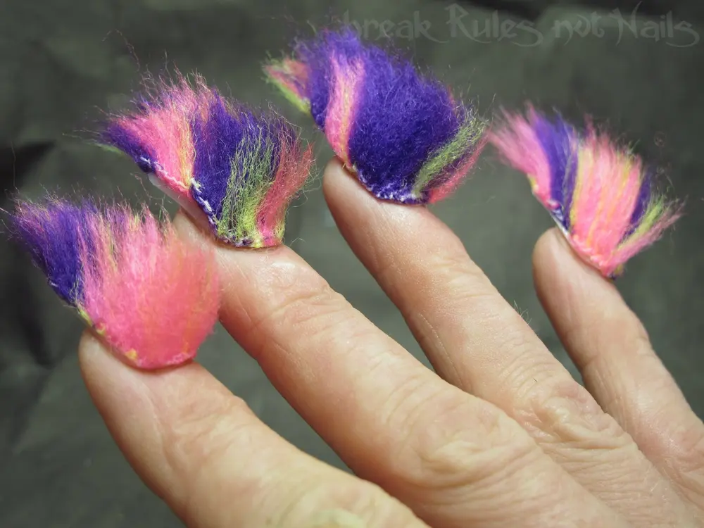
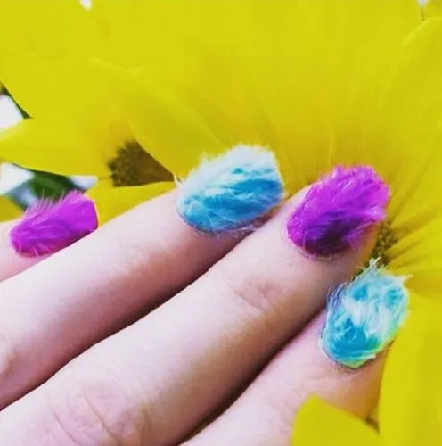
Insomma a parte il mio modesto e personale parere, voi cosa ne pensate?Ditemi la vostra ..